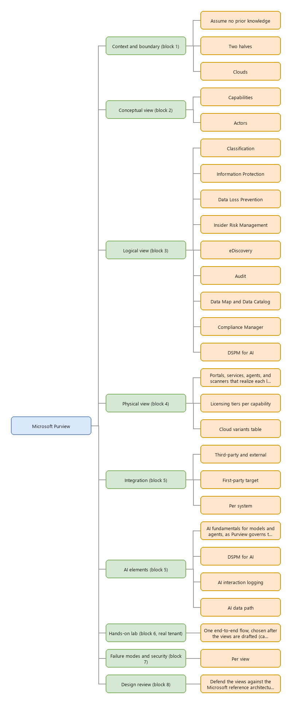
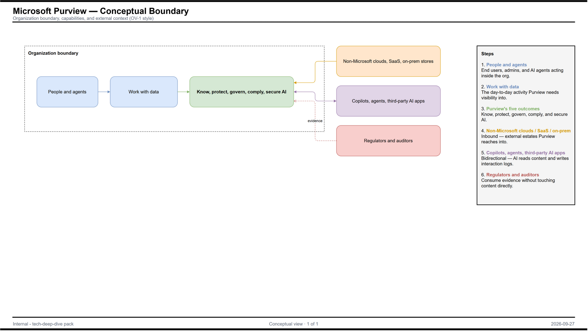
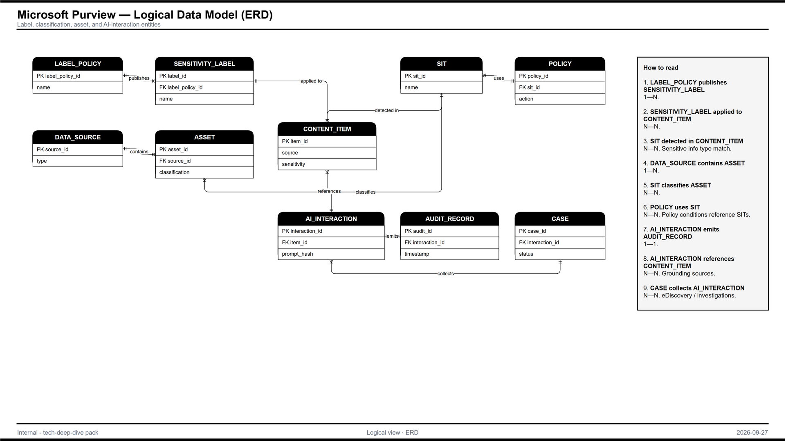
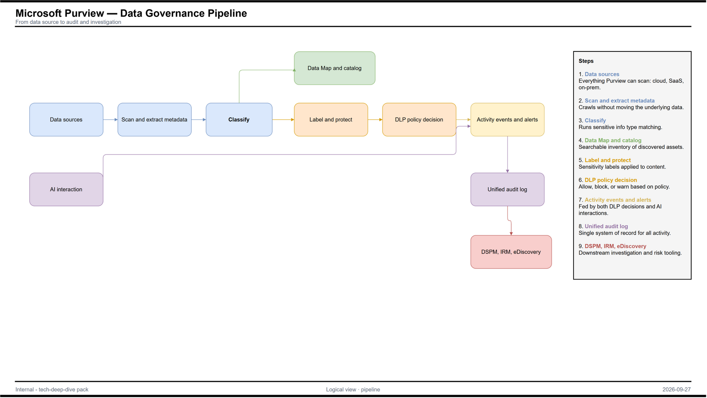
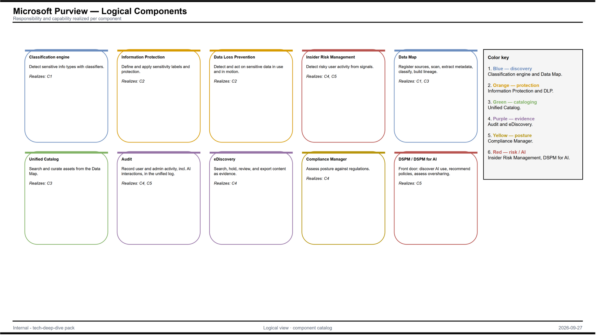
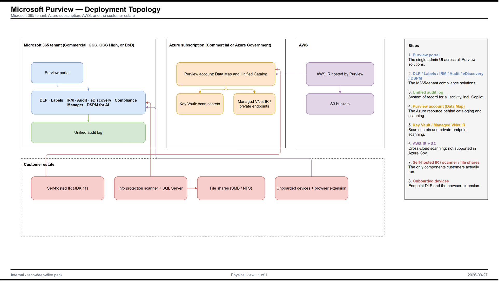

Each diagram as the rendered PNG, the editable draw.io file, and the Mermaid source where one exists. Open .drawio files in draw.io (desktop, or app.diagrams.net).
00-mindmap

01-conceptual-1
PNG · draw.io · Mermaid (.mmd)

Mermaid source
flowchart LR
subgraph Org["Organization boundary"]
U["People and agents"] --> WORK["Work with data"]
WORK --> CAP["Know, protect, govern, comply, secure AI"]
end
EXT["Non-Microsoft clouds, SaaS, on-prem stores"] --> CAP
AIAPPS["Copilots, agents, third-party AI apps"] <--> CAP
REG["Regulators and auditors"] -.evidence.-> CAP
02-logical-1
PNG · draw.io · Mermaid (.mmd)

Mermaid source
erDiagram
LABEL_POLICY ||--o{ SENSITIVITY_LABEL : publishes
SENSITIVITY_LABEL }o--o{ CONTENT_ITEM : "applied to"
SIT }o--o{ CONTENT_ITEM : "detected in"
DATA_SOURCE ||--o{ ASSET : contains
SIT }o--o{ ASSET : classifies
POLICY }o--o{ SIT : uses
AI_INTERACTION ||--|| AUDIT_RECORD : emits
AI_INTERACTION }o--o{ CONTENT_ITEM : references
CASE }o--o{ AI_INTERACTION : collects
02-logical-2
PNG · draw.io · Mermaid (.mmd)

Mermaid source
flowchart LR SRC["Data sources"] --> SCAN["Scan and extract metadata"] SCAN --> CLS["Classify"] CLS --> CAT["Data Map and catalog"] CLS --> LBL["Label and protect"] LBL --> DLP["DLP policy decision"] DLP --> EVT["Activity events and alerts"] AI["AI interaction"] --> EVT EVT --> AUD["Unified audit log"] AUD --> INV["DSPM, IRM, eDiscovery"]
02-logical-3

03-physical-1
PNG · draw.io · Mermaid (.mmd)

Mermaid source
flowchart TB
subgraph M365["Microsoft 365 tenant (Commercial, GCC, GCC High, or DoD)"]
PORTAL["Purview portal"]
SOL["DLP · Labels · IRM · Audit · eDiscovery · Compliance Manager · DSPM for AI"]
UAL["Unified audit log"]
end
subgraph AZ["Azure subscription (Commercial or Azure Government)"]
ACCT["Purview account: Data Map and Unified Catalog"]
KV["Key Vault: scan secrets"]
MVNET["Managed VNet IR / private endpoints"]
end
subgraph AWSX["AWS"]
AWSIR["AWS IR hosted by Purview"]
S3["S3 buckets"]
end
subgraph ONP["Customer estate"]
SHIR["Self-hosted IR (JDK 11)"]
SCN["Information protection scanner + SQL Server"]
FS["File shares (SMB / NFS)"]
DEV["Onboarded devices + browser extension"]
end
PORTAL --> SOL
SOL --> UAL
ACCT --> KV
ACCT --> MVNET
AWSIR --> S3
AWSIR --> ACCT
SHIR --> ACCT
SCN --> FS
SCN --> SOL
DEV --> SOL
04-integration-ai-1
PNG · draw.io · Mermaid (.mmd)

Mermaid source
flowchart LR
subgraph P["Microsoft Purview boundary"]
DM["Data Map"]
MIP["Information Protection + DLP"]
DSPM["DSPM / DSPM for AI"]
AUD["Unified audit log"]
end
S3["AWS S3"] -->|"AWS IR, Role ARN"| DM
SF["Snowflake"] -->|"key pair"| DM
SFDC["Salesforce"] -->|"REST API, connected app"| DM
FS["On-prem file shares"] <-->|"scanner, SMB"| MIP
OT["OneTrust"] -->|"via Sentinel"| DSPM
SPO["SharePoint Online"] <--> MIP
SPO --> DSPM
AIAPPS["Copilots and agents"] --> AUD
AUD --> DSPM
04-integration-ai-2
PNG · draw.io · Mermaid (.mmd)

Mermaid source
flowchart LR
USER["User or agent prompt"] --> AI["Copilot / agent / AI app"]
AI --> GROUND["Grounding data (SharePoint, OneDrive, Teams)"]
GROUND --> CTRL{"Labels, DLP, access checks"}
CTRL -->|allowed| AI
AI --> RESP["Response"]
AI --> LOG["Unified audit log: CopilotInteraction"]
LOG --> DSPM["DSPM for AI activity explorer"]
LOG --> RET["Retention and eDiscovery"]